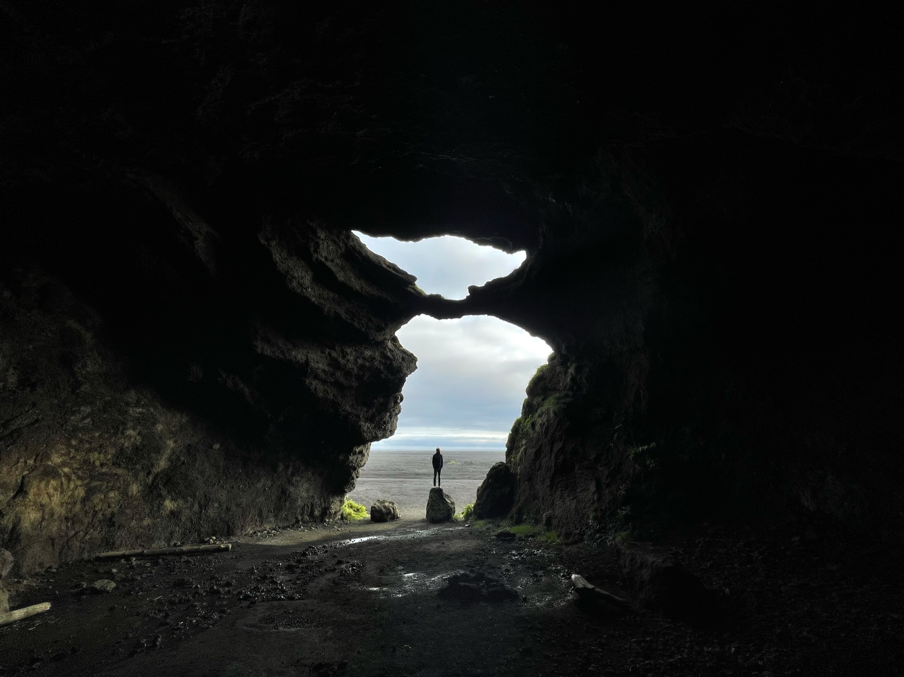
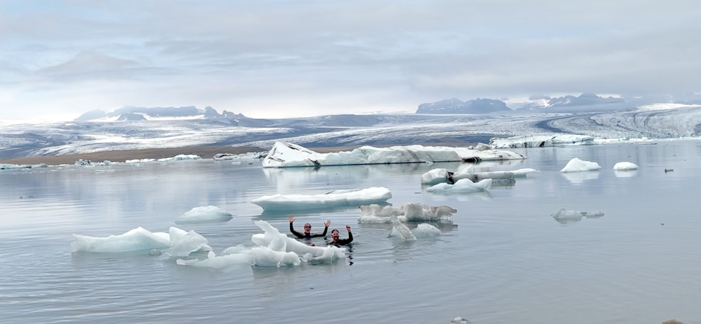
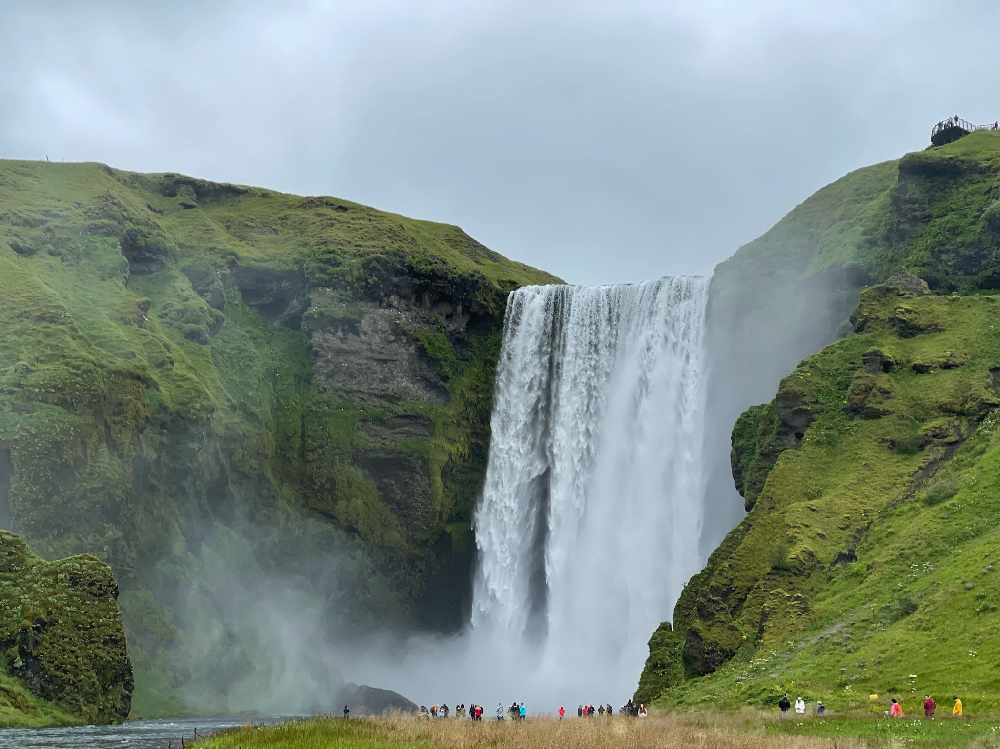
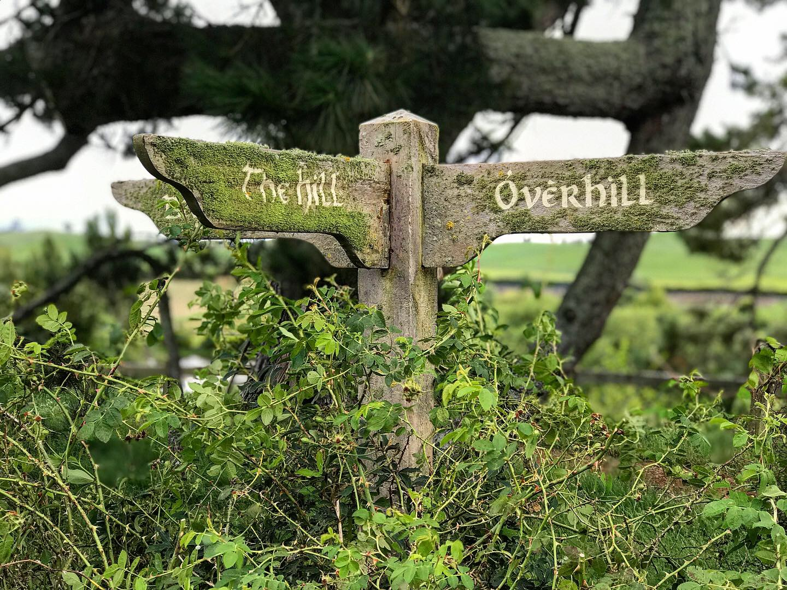
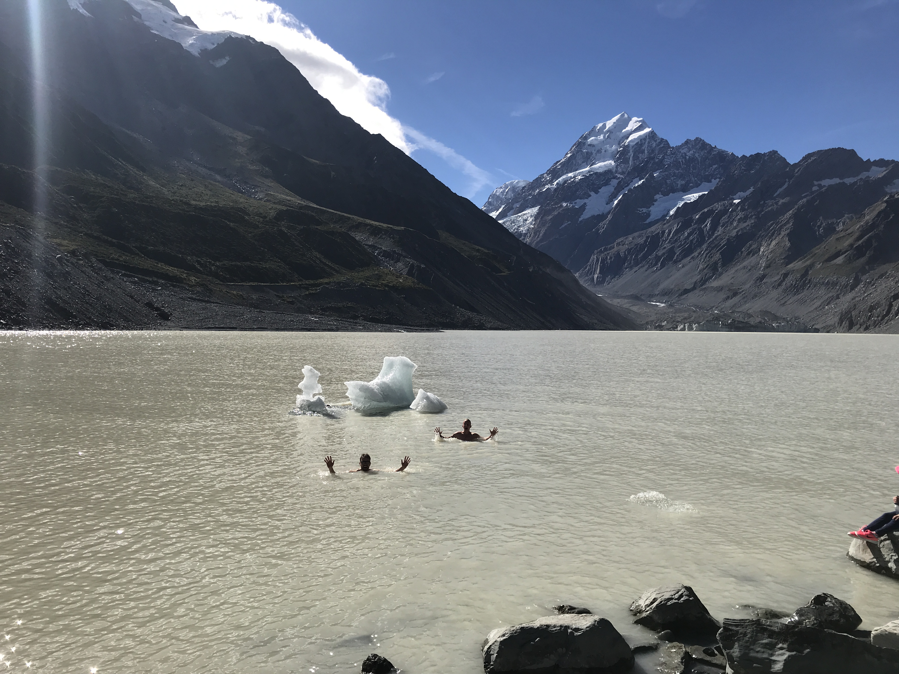
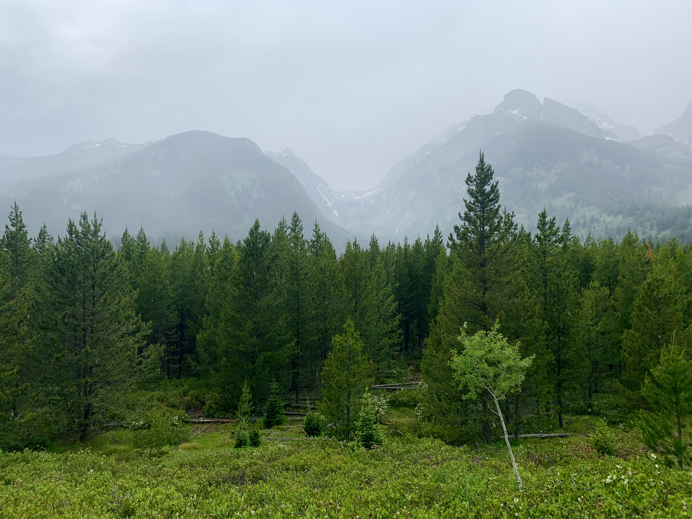
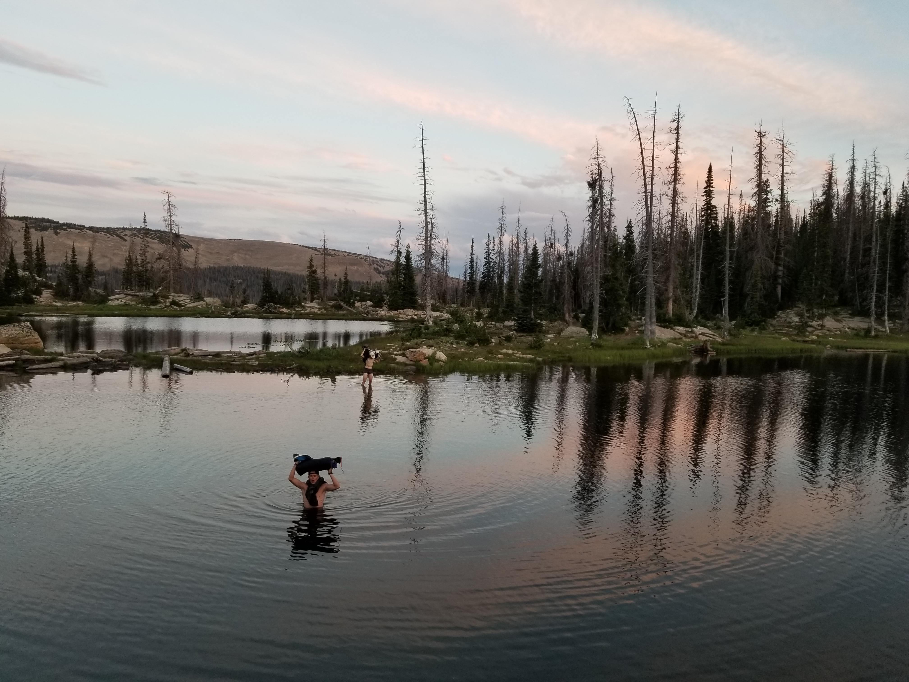
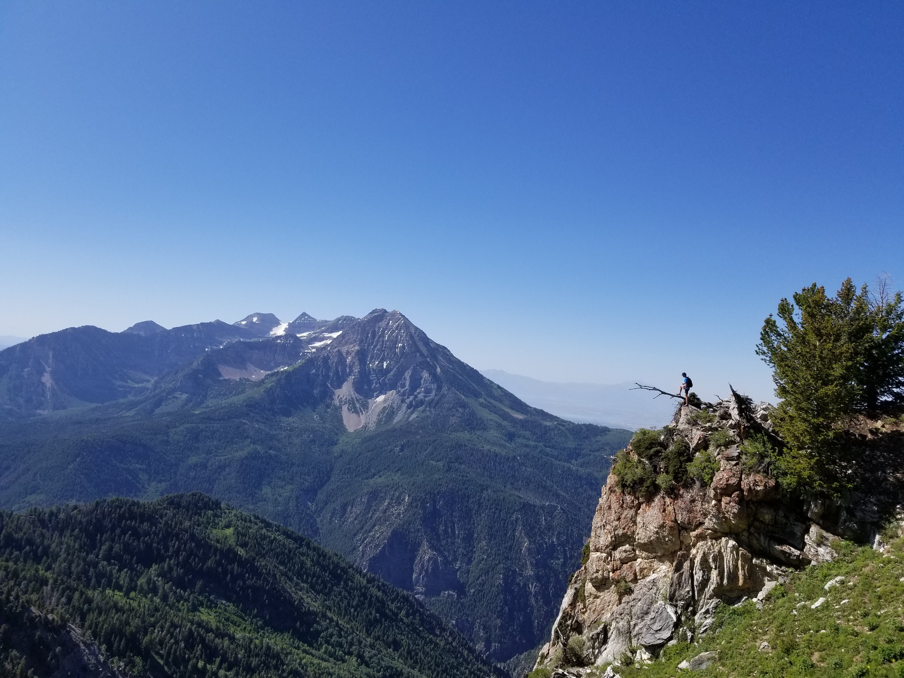
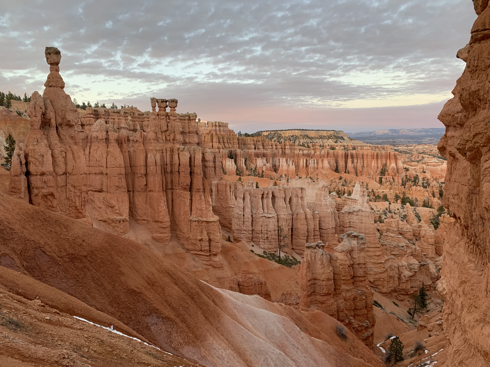

TRAVEL ADVENTURES
Following Noah across Iceland, New Zealand, and the Western United States
"Out the Door & Into the Wild"
- Iceland
- | Stokksnes |
- Vik |
- Husavik |
- New Zealand
- | Waikato Region |
- Christchurch |
- Aoraki/Mt. Cook |
- The Western United States
- | Teton Mountains |
- Wasatch & Unitah Front |
- Bryce Canyon |
  
Quick Biography:
Vik, Stokksnes, and Husavik are three captivating cities nestled within the stunning landscapes of Iceland. Vik, situated on the southern coast, boasts dramatic black sand beaches and towering basalt sea stacks, including the iconic Reynisdrangar. It's a haven for nature enthusiasts, offering opportunities for birdwatching and exploring nearby waterfalls like Skógafoss and Seljalandsfoss. Stokksnes, located on the southeastern coast, is famed for its otherworldly landscapes, with vast stretches of black sand dunes juxtaposed against the towering Vestrahorn mountain. Photographers flock here to capture the breathtaking scenery, especially during sunrise and sunset. Finally, Husavik, known as the "Whale Watching Capital of Iceland," sits on the northern coast and offers unparalleled opportunities to observe majestic marine life, including humpback whales and dolphins, amidst its picturesque surroundings. Additionally, Husavik boasts charming streets lined with colorful houses, inviting visitors to explore its rich maritime history and vibrant culture. Each of these cities offers a unique glimpse into Iceland's natural wonders and cultural heritage, making them must-visit destinations for travelers seeking unforgettable experiences.
My Experience:
Driving around Iceland was an absolute adventure with my father. As we ate our pasta and struggled to get some good sleep, spriting around these amazing towns was incredible! We made it a goal to try to run all of the hikes we could in order to fit more sceneic stops in during our 6-day trip around the island. Talking together at the lighthouse in Husavik has become one of our most cherished memories.
Over the last few years, the popularity of Iceland has exploded. With the increase in social media usage and modern photography, the once-hidden island continues to gain fame around the world. Below are some of the statistical recordings of recent international tourism to the island.





Quick Biography:
As the heart of the North Island of New Zealand, the Waikato region beckons with its lush green landscapes and rich cultural heritage. Home to the mighty Waikato River, the longest in the country, this region boasts enchanting natural wonders such as the spellbinding Waitomo Caves, where luminescent glowworms illuminate the subterranean caverns. Journeying south to the breathtaking mountain ranges of the South Island, one is greeted by a tapestry of rugged peaks, tranquil lakes, and verdant valleys. Here, adventurers can explore the iconic Southern Alps, offering thrilling outdoor pursuits amidst awe-inspiring scenery. Among these majestic peaks lies the crown jewel of Aoraki/Mount Cook National Park, where the tallest mountain in New Zealand, Aoraki/Mount Cook, towers over a pristine alpine landscape. With its glistening glaciers, turquoise lakes, and pristine wilderness, this park is a haven for hikers, mountaineers, and nature enthusiasts alike, inviting visitors to immerse themselves in the unparalleled beauty of the Southern Alps.
My Experience:
As a family we had the absolute privilege of living in New Zealand for a period of about 25 months. The amazing scenery and natural beauty of the country really brought our entire family together as we set off to explore what we could together. Some of my favorite pictures are encompassed in these pictures, specifically visiting the film location of ‘Hobbiton’ from ‘The Lord of the Rings’. As we drove in that day, I remember that special feeling as tears rolled down my face. I hope to never forget all the wonderful people and experiences that we had in our short time there. It truly changed the way I view others and shaped my love for the outdoors. Life really can be whatever you make it.
   
Quick Biography:
The Western United States is a realm of unparalleled natural beauty, where rugged landscapes and majestic vistas captivate the imagination. Bryce Canyon National Park stands as a testament to the forces of nature, with its towering hoodoos and sweeping amphitheaters offering a glimpse into the Earth's ancient past. To the east, the Wasatch and Uinta Mountains rise majestically, their rugged peaks and verdant forests providing a playground for outdoor enthusiasts in Utah's vibrant capital, Salt Lake City. Further north, the Teton Mountains in Wyoming command attention with their jagged summits and tranquil lakes, painting a picture of serenity amidst the wild frontier. Together, these iconic destinations embody the timeless allure and grandeur of the Western United States.
My Experience:
After arriving home from New Zealand, I was somewhat unsure of how to approach the nature of my new home; however, the passions I had recently formed from nature away from the United States couldn't have been better expressed than here in the Western States. I have enjoyed exploring the local mountain ranges with my friends, visiting the surrounding national parks, and helping others to find new appreciation for their local surroundings. I am excited to continue to explore, and feel so blessed to live in a place where so many of the people arrund me are anxious to do the same. I have also recently begun an effort to visit the extensive list of local waterfalls in the Salt Lake Valley.
Here below is a fun 16-minute video jounral that I made with my friends highlighting a 3-day backpacking trip through the Coyote Gulch, located in Southern Utah.
Must remains to be seen and experienced. I am excited to continue to explore and help others to recognise the beauty around them, and I beg to reckon that most will be suprised by how small the distances often are to reach it.